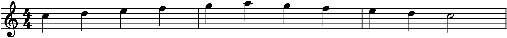
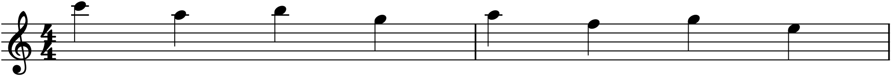

Part 1 gave you the notes, Part 2 the chords beneath them. Now we return to the single line — the melody — but armed with everything since. A melody is the part of a piece people whistle walking home; it is what a song is. And yet most successions of correct notes are not tunes at all, just notes in a row. What separates a melody that lodges in the memory from a line that evaporates the moment it ends? The difference is not luck. It is a handful of concrete qualities — shape, balance, a memorable cell, the right mix of repetition and surprise — and this chapter names them, so you can put them into melodies of your own on purpose.
17.1Contour and climax
The first thing to hear in a melody is its contour — the shape it draws as it rises and falls, the line you would trace in the air following the pitch up and down. Contour is a melody’s silhouette, recognizable even when you cannot name a single note.

The melody in Figure 17.1 has an arch shape — up to a peak and back down — which is the most natural and common contour, following the rise and fall of a breath or a spoken sentence. Others exist: a steadily ascending line builds tension, a descending one releases it, a wavy line meanders. But whatever the shape, the single most important point in it is the climax: the highest note, ideally reached only once, toward which the whole melody seems to aim. A melody with a clear high point has a goal and a shape; one that wanders up to its top note several times has neither. The climax often falls not in the middle but a little past it — around two-thirds of the way through — so that the melody spends most of its length reaching the peak and then falls away quickly, which feels more shapely than a peak dead-centre.
17.2Steps and leaps
A melody moves in two ways, and the balance between them is much of what makes it singable. Stepwise motion (also called conjunct) moves by seconds — to the very next note of the scale — and is smooth, easy to sing, the connective tissue of most melodies. Leaps (disjunct motion) jump by a third or more; they are events, moments of energy and reach, and a melody made only of leaps is jagged and hard to sing, while one made only of steps can be dull.
Good melodies are mostly stepwise, with leaps used sparingly for effect — and there is a classic way to handle a leap gracefully: follow a large leap with a step in the opposite direction. After the line jumps up a sixth, let it ease back down by step; the leap provides the drama, the step recovers the balance. This “leap then step back” shapes countless great tunes. Related to this is range — the distance from a melody’s lowest note to its highest. A singable melody usually stays within about an octave or a little more; much wider and it strains the voice and loses coherence.
17.3The motive
The most powerful unifying device in melody is the motive — the smallest memorable fragment of a tune, a short cell of a few notes with a distinctive rhythm and shape. A motive is not a whole melody; it is the seed from which one grows. The four hammered notes that open Beethoven’s Fifth Symphony are a motive; so is the rising fourth that begins countless anthems. What makes a fragment a motive is that it is distinctive enough to be recognized when it comes back — and come back it will, because a melody built by repeating and transforming one small idea has a unity that a string of unrelated phrases can never have.
This is the deepest secret of melodic writing, and the one beginners most often miss: a good melody usually says less than you think, and says it more often. Rather than inventing new material bar after bar, the skilled composer states a short idea and then works it — repeats it, moves it, varies it. Chapter 19 is devoted entirely to that craft of motivic development; here we only need to see the three simplest ways a motive recurs.
17.4Repetition, variation, and sequence
Every melody balances two opposing needs: the familiar, so the listener can follow and remember, and the new, so they do not grow bored. The motive supplies the familiar; how you bring it back supplies the new. There are three basic degrees:
- Exact repetition — the motive stated again, note for note. The simplest and strongest way to make an idea stick; most memorable tunes repeat their opening almost immediately.
- Variation — the motive returns recognizably but changed: a note altered, the rhythm adjusted, an ending redirected. Familiar enough to connect, new enough to move forward.
- Sequence — the motive repeated at a different pitch level, shifted consistently up or down. This is variation’s most useful special case, powerful enough to deserve its own name.

The sequence in Figure 17.2 shows why the device is so common: once the ear catches the pattern in the first two statements, it predicts the rest and is pulled forward by the descent. A sequence generates a lot of coherent melody from very little material, which is exactly the economy good melody prizes. Used in moderation it is invaluable; overused, it becomes mechanical — three or four steps of a sequence is usually the most the ear wants before it needs something new.
17.5Melody and harmony together
After Part 2 you can hear what a beginner cannot: that a melody and a harmony imply each other. A strong melody nearly always outlines chords — its notes on the strong beats tend to be chord tones of the harmony beneath, while the notes in between are the non-chord tones of Chapter 16, passing and leaning and resolving. This is why the tunes you know can be harmonized so naturally: they were built, consciously or not, around an implied progression. When you write a melody, you are also sketching its harmony, and the two are strongest when composed together — a melody that lands on chord tones at the important moments will feel grounded, while one that avoids them drifts.
The practical upshot for writing melodies is a short checklist you can actually apply: give it a clear contour with one climax; move mostly by step, with leaps for drama and a step back to recover; build it from a motive you repeat, vary, and sequence; keep it within a singable range; and let its strong beats land on the notes of an implied harmony. None of this guarantees a great tune — nothing does — but it is the difference between a line and a melody, and it is entirely learnable.
In MuseScore
MuseScore is an ideal workshop for melody, because you can see the contour and hear the result instantly, and reshape either.
- Watch the contour. Enter a melody and look at it — the up-and-down of the noteheads is the contour. If there is no clear high point, or the top note recurs several times, reshape it: select a note and nudge it with ↑/↓ until the line has one climax.
- Build sequences by copy and transpose. Enter a motive, select it, copy with Ctrl+C, and paste it at the next spot; then, with the pasted copy selected, transpose it up or down a step with ↑/↓ (or Tools ▸ Transpose). Repeat, and you have a sequence in seconds — exactly the economy of §17.4, made mechanical.
- Check the range by selecting the whole melody; the status bar and the spread of the notes tell you at a glance whether it stays singable.
- Test the implied harmony by adding chord symbols (Ctrl+K) or a simple bass under the strong beats, and playing it. If the melody’s accented notes fit the chords, it will sound grounded.
Try it: enter the arch melody of Figure 17.1 and play it, listening for how the whole line aims at the A. Then compose a two-note motive of your own, and use copy-and-transpose to sequence it down the scale as in Figure 17.2. You will have written, from a single tiny idea, a passage that sounds purposeful — which is the whole art of melody in miniature.